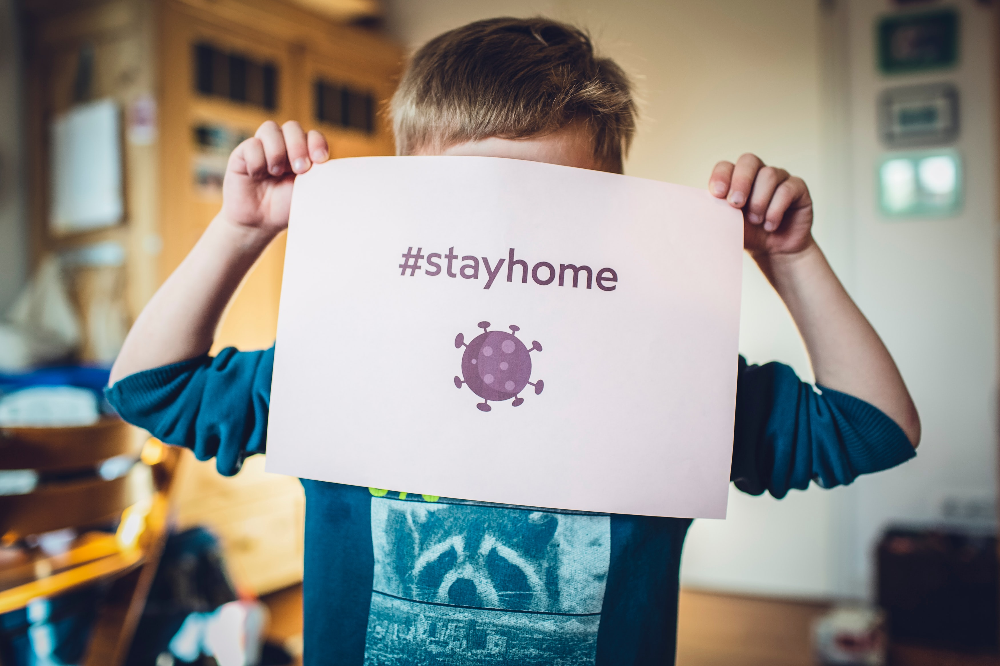

<mat-sidenav-container class="sidenav-container">
  <mat-sidenav
    #drawer
    class="sidenav"
    fixedInViewport
    [attr.role]="(isHandset$ | async) ? 'dialog' : 'navigation'"
    [mode]="(isHandset$ | async) ? 'over' : 'side'"
    [opened]="(isHandset$ | async) === false"
  >
    <mat-toolbar>
      
    </mat-toolbar>
    <div id="userInfo">
      
      <p class="titleText"><b>Usuário Aleatório</b></p>
      <p class="titleText">usuário@aleatorio.com</p>
    </div>
    <mat-nav-list>
      <mat-list-item>
        <mat-icon>home</mat-icon>
        <a routerLink="/home/perfil">Perfil</a>
      </mat-list-item>
      <mat-list-item>
        <mat-icon>help</mat-icon>
        <a routerLink="/home/ajuda">Ajuda</a>
      </mat-list-item>
      <mat-list-item>
        <mat-icon>info</mat-icon>
        <a routerLink="/home/sobre">Sobre</a>
      </mat-list-item>
      <mat-list-item>
        <mat-icon>home</mat-icon>
        <a routerLink="/home/eventos">Eventos</a>
      </mat-list-item>
    </mat-nav-list>
  </mat-sidenav>
  <mat-sidenav-content>
    <mat-toolbar color="whitesmoke">
      <button
        type="button"
        aria-label="Toggle sidenav"
        mat-icon-button
        (click)="drawer.toggle()"
        *ngIf="isHandset$ | async"
      >
        <mat-icon aria-label="Side nav toggle icon">menu</mat-icon>
      </button>
      <h1 class="titleText">Eventos</h1>
    </mat-toolbar>
    <ng-content></ng-content>
  </mat-sidenav-content>
</mat-sidenav-container>
